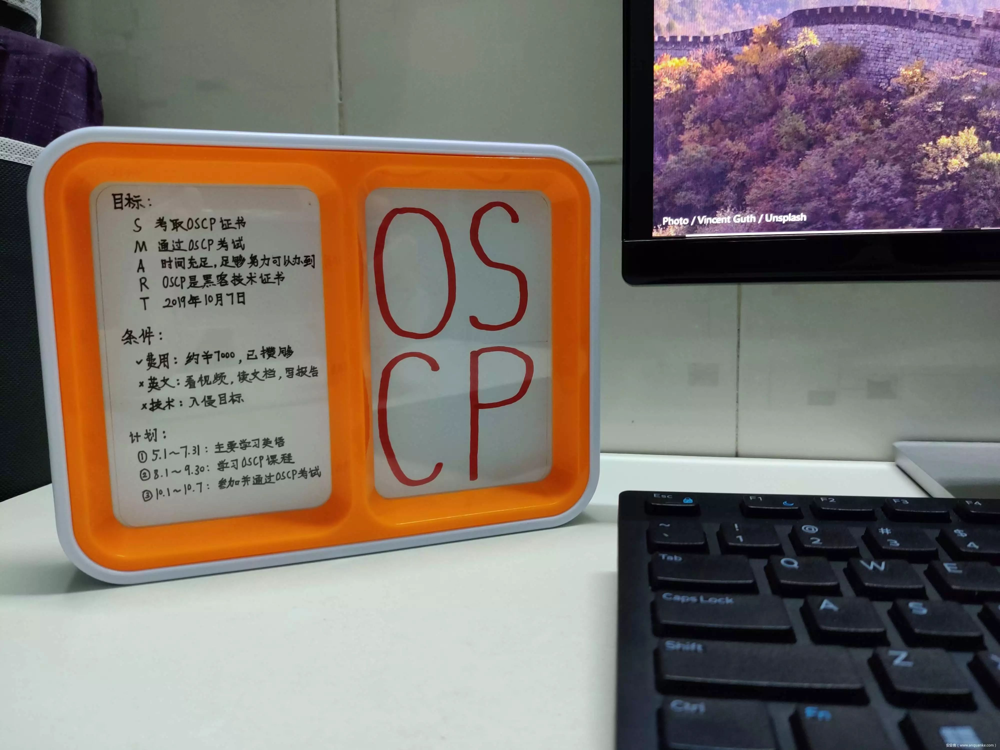
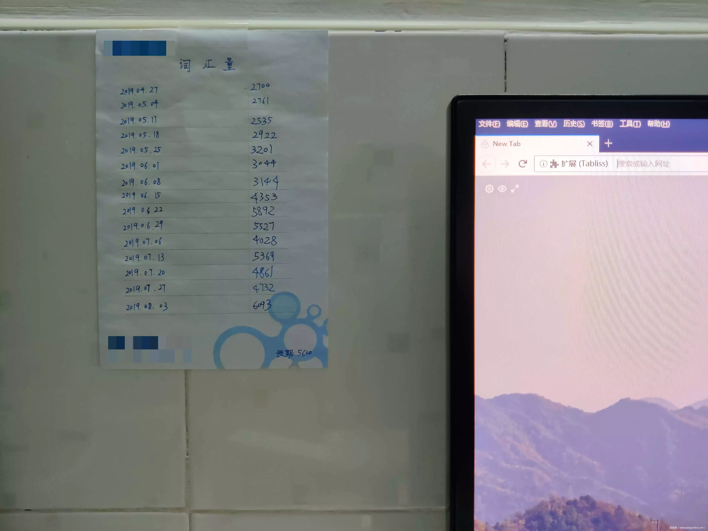
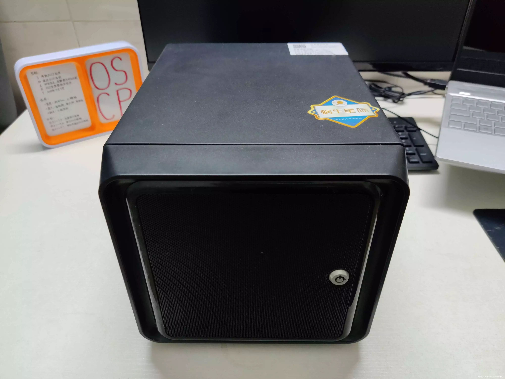
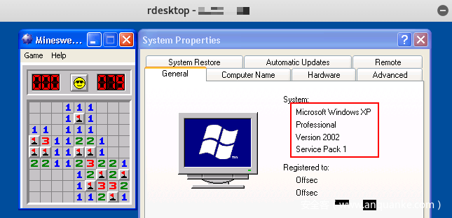
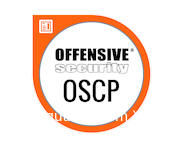

关于昨天推送的
加下微信:X175144340，验证消息填：PTE
本文假设读者知道OSCP是什么。若不知道，请先阅读《Offensive Security Certified Professional (OSCP) Overview》。
我们知道要学习一样东西，一种很好的方法便是阅读官方文档。有一天忽然想到可以找找Kali的官方文档，找来找去就找到了OSCP（它们同属Offensive Security）。这是我第一次认真地了解什么是OSCP，如何才能拿到OSCP认证。当了解到OSCP的考试方式是实际攻击指定的5台靶机时觉得十分有趣，便挺想考的。但至少800美元和30天时间的代价使得我没有立刻下定决心。真正下定决心是在一段时间之后，2019年5月4日。那天下午我忽然就想要去爬塘朗山。我住在塘朗山附近已经两个月了，还从没爬过。出地铁站后发现在下雨，不过雨不大， 我也带了伞，就没有放弃。塘朗山的登山道很陡峭，被雨水浸湿的石头很滑，我一手撑着伞，一手抓着护栏，一个人在渐渐昏暗的天色中小心翼翼地爬着。一路上很少遇到别人，仿佛世界上只剩下我一个人，这样的环境最适合思考人生。我想起了初中，想起了高中，想起了大学，想起了那些陪伴我的数学题，物理题和课程设计。过往的人生在跌跌撞撞中度过，全都回忆完时我才爬了一小半。时间过得飞快，一转眼我毕业都快一年了。这一年来有什么长进呢？要说长进还是有一点的，但远不及预期。忽然想到若是我刚毕业就准备OSCP考试，到现在一定早就考过了。曾有一个同学和我说：种一棵树最好的时间是十年前，其次是现在。同样的道理，若是我现在开始准备OSCP考试，要花多久呢？一个月，两个月还是半年？不管是一个月还是半年，在回忆中都只是一瞬。至于费用，更不是问题，虽然我工资不高，但生活得即为节俭，攒几个月便可以凑齐报名费。但还有一个更大的阻碍摆在我面前，那便是OSCP是全英文的，而我的英语学得很差。差到什么程度呢，高中时英语考试很少及格，到大四时才通过四级考试。英语可以是我放弃的理由吗？我一边爬山一边在心里盘算，为了OSCP我总共需要再背多少个单词，每天需要背多少个，总共需要背多久。最后不知道哪里来的勇气就觉得英语应该不是问题，只要在真正报名OSCP前先背几个月单词就可以了。几个月也只是一瞬间。那天我一鼓作气爬到了塘朗山顶。下山时天色已经很暗，有些看不清路，好在雨停了。我又一个人在黑暗中摸索着下山，想起大学时也常常这样一个人在晚上爬喻家山，现在的我和大学时的我并没有什么本质上的变化。下山回家后很快拟定了学习方案。我是这样计划的：先花三个月（5月、6月和7月）做考试前准备，主要内容是背单词，次要内容是用Vulnhub靶机进行渗透测试练习，接下来两个月（8月和9月）进行OSCP课程学习，最后在10月初参加考试。为了避免自己遗忘特意买了一个相册，将自己的目标和计划写在上面，放在显示器旁。还在网上找了一张别人的OSCP证书的照片设置为自己的壁纸，每次开机都会看到。

当这样一个符合SMART原则的目标写在纸上后，我的OSCP之旅便真正开始了。按照计划，我要开始背三个月单词。在4月27日，刚好做过一次词汇量测试，结果为2700。又做了一次，结果为2761，考虑到10%的误差，相当于毫无变化，说明这个词汇量测试还是有一定准确性的。我拿出一张草稿纸，用铅笔画了一个15*2的表格，第一列写下日期，从2019.04.27开始，接着是2019.05.04，以此类推（间隔为一周），最后一个日期是2019.08.03。然后在第二列写下已有的两次词汇量测试记录，并计划每周六（4月27日和5月4日都是周六）背完单词后测试一次词汇量，将结果写在纸上。这张纸就贴在显示器侧后方的墙上。因为上下班公司都有班车接送，所以我选择在上下班的路上背单词。刚开始时每天背200个（包括复习和新学），后来觉得实在太多，便改为每天背100个。刚开始时稍稍觉得有点艰难，因为我的大脑已经很久没有进行过背单词这项活动了，就如同让一个好久没有跑步的人忽然长跑一般不适。但很快就适应了这种生活，并慢慢变成一种习惯。每过一周，便在纸上写下一个数字，有时涨，有时跌，但总体趋势还是向上的。当2019.08.03那行被填满时，我几乎不敢相信三个月已经过去了。当三个月的背单词计划完成时，我的词汇量由2700增长到了6093，虽然距离学好英语还差了很远很远，但心想应付OSCP应该足够了。

这三个月里，另一项准备是用Vulnhub的靶机做渗透测试练习。因为我以前的渗透经验几乎为0，就算是靶机也没有完完整整地完成过一台，所以觉得有必要先练习一下。我的电脑性能不够好，同时跑两台虚拟机（一台kali，一台靶机）会不堪重负，所以我买了一台蜗牛星际把它重装成Ubuntu 18.04专门用来跑靶机。

一方面由于经验的缺乏，另一方面由于Vulnhub的靶机大多是CTF风格的，常常需要脑洞大开，所以这项练习进度很慢，最终三个月也只完成了6台靶机的渗透。每台都写了一篇文章详细地记录整个渗透过程，它们是：
按照计划，我在八月刚开始就报名了OSCP，1000美元的报名费是我工作以来最大的单笔花销。其中的小插曲是OSCP需要一个英文的有效证件来验证身份，我只好去办护照，深圳不愧为效率之城，不到一周我便拿到了护照。课程真正开始是在8月11日的早上8点，我收到了一封邮件，包含着视频教程和PDF教材的下载链接，VPN实验室的访问方法和账号密码，学生论坛的地址和账号密码以及其他很多注意事项和参考链接。下载后看了下，视频共有149个，好在每个都只有几分钟，PDF共有380页，大概翻了下有很多截图，所以真正文字并没有太多。然后试了实验室和论坛的账号密码，都能成功登录。其实我最关心的事情是视频教程有没有字幕，因为我的英语听力比阅读能力差太多了，不幸的是没有字幕。11日一整天我都在研究怎么给视频加上字幕。最后找到一个名叫autosub的Python库可以自动生成字幕文件，但这个Python库只支持Python2，而我又只安装了Python3，就改动它的源码，使之兼容Python3。顺利地生成字幕文件后用ffmpeg命令把字幕加到了MP4视频中。学习方法是以章为单位，先看完一章的视频，再阅读对应章节的PDF，若遇到习题便完成它。之所以要以章为单位，是因为我发现视频教程和PDF教材的内容虽然大体上是一样的，但在细节上有所出入。由于我以前看过好几本系统讲述渗透测试的书籍，所以感觉OSCP的课程都是些熟悉的内容。但即便这样，完成课程的学习花去了四周的时间。在这期间，上下班路上有时看视频教程，有时背单词。但背法发生了变化，在晚上学习时遇到不认识的单词后我就记录下来，第二天上下班路上就背这些单词。我把这期间的单词汇总整理，放在OSCPVocabulary。但背单词的效果并不如前三个月理想，可能是因为现在心思都在课程学习上。学完OSCP课程后，并没有收获很大的感觉。真正的收获主要来自于实验。在进行实验时，我需要用VPN连接到一个内网，这个内网中有很多任我攻击的靶机，这些靶机是被精心设计用于渗透测试练习的。实验的第一个问题是网络质量。官方文档要求的网络质量是PING延时在300毫秒以内且丢包率为0。我显然没有这么好的网络，尤其是到了晚上网络质量更差，这大概是由于这个时候主干网被各种游戏和视频数据包拥塞。延时的问题不是很大，一般在320到350毫秒之间，大些时会到400毫秒。丢包却很严重，有时会高达70%！完全无法使用。最后的解决方法是使用Socks 5代理让VPN连接经香港中转，这样延时虽然没有降低但丢包却锐减到几乎为0。解决网络质量问题后便可以愉快地实验。有些靶机非常简单，从端口扫描到拿到root权限，只花了不到半个小时，有些靶机难度很大，最久的一台我花了5天的时间才搞定。有些靶机甚至需要另一台靶机上的某些信息，否则是不可能被攻陷的。由于平时还要上班和加班，所以真正进行实验的时间很有限，到9月30日时，我才拿下了个位数的靶机（总共有50多台）。但实验室访问权限快要到期了，而按照最初的计划我也应该在10月初考试，所以依旧预约了考试，具体时间是2019年10月6日18:00到2019年10月7日17:45。另外还在8号那天请了一天假以写报告。国庆假便是我最后的冲刺时间了，10月1日，正在阅兵的时候，我拿下了一台Windows XP SP1，还在上面玩了一把扫雷。又用一个Web服务的远程代码执行漏洞拿下一台Windows 8.1，又用MS17-010拿下一台Windows XP，并用从XP获取的信息成功提权Windows 8.1。这是我整个实验期间战绩最好的一天，拿下了三台靶机。

10月2日拿下两台Linux，3日遇到一台很难的靶机花了整整一天时间拿下了它，到4日时已经头昏脑胀，但依旧拿下了两台。这种头昏脑胀的感觉不是来自疾病，而是来自疲乏。就如同过多的运动会使肌肉疲乏，过多的思考也会使大脑疲乏。如果读者在学生时代曾进行过认真的学科竞赛训练，就应该曾体会过我所说的感觉。出于休息的考虑5日只拿下了一台，到6日时便停止了实验，而是选择打扫房间卫生。因为我赞同福尔摩斯的观点，最好的休息是进行另一项工作。6日下午还再次去爬塘朗山，但出地铁站后发现在下雨，而这次我没有带伞，在考试开始前几个小时冒雨爬山不是一个明智的选择，只好放弃了。
考试的总时长是23小时45分钟， 我需要在这段时间里入侵5台靶机，每台有不同的分值，满分为100分，超过75分则通过考试。考试结束后另有24个小时时间完成渗透测试报告，最后的得分还要看报告写得如何。因为前一天晚上和当天中午都没能睡好觉，所以特意买了速溶咖啡，在考试开始前喝了半袋。10月6日17:45登录监考Web页面，验证护照，设置屏幕共享，检查周边环境（拿起笔记本转一圈）等花了好久，真正开始考试已经是18:30。说起来我原本以为需要和监考者用英语口语交流，觉得自己考不过很可能是因为口语不好，看了考试说明才发现是在Web页面中打字交流的。前三个小时一筹莫展，当时心想虽然通不过考试也在预期之内，但拿0分未免过于丢人。三小时后忽然取得进展，大概在21:30用一个远程代码执行漏洞直接拿下了一台10分靶机的root权限，接着一鼓作气，在22:00左右用文件上传漏洞拿下了一台25分的靶机的低权限shell，并在一个半小时后用第三方软件漏洞成功提权。35分到手已经超过预期了，和监考者说了一声后便去睡觉了。原计划睡到第二天早上6:45，但不出意料地失眠了，至少到凌晨1点时还是醒着的，具体几点睡着的不清楚。也醒得很早，不到6点就醒了。醒来后立马起床，简单洗漱后喝掉了剩下的半袋咖啡，边吃提前准备好的早餐边开始新的入侵。在一台20分的靶机中非常顺利地找到了远程php代码执行漏洞。但利用却总不成功，执行phpinfo()是正常的，执行system(‘id’)却不行，没有任何报错也没有任何输出。过了好久才想到去phpinfo()的输出里看看是不是system函数被禁用了，一看果然是，还禁用了一大堆能执行系统命令的函数，好在给我留下了proc_open。知道原因后就好搞了，花了点时间成功拿到低权限shell，这个时候已经9点半了。接着用Linux内核漏洞还算顺畅地提权。至此拿到了55分。接下来搞定的一台25分的靶机。这台和其他四台不同，并不是渗透测试靶机，而是一道缓冲区溢出题目，需要自行确定漏洞，开发利用程序，并利用这个漏洞入侵这台靶机。只是一道很简单的溢出题目，其难度甚至小于我在准备期间完成的溢出靶机Overflow，不明白这台靶机为何会值25分。当然我会有这种感觉，可能只是因为我是科班出身，学习过相关知识。开发利用程序时甚至回忆起了大学时代，回忆起了软件安全这门课。我拿下这台靶机比较顺畅，在13:00前就完成了，中途还吃了顿午饭。午饭是炒米饭外卖，前一天就订好了，选择炒米饭是因为吃起来比较节约时间。拿下这台有两个地方耽搁了些时间，一是看漏了两个坏字符，二是构造攻击荷载时少加了16个NOP，因为我用了编码器，不加这16个NOP的话解码操作会破坏shellcode。午觉大概睡了半个小时，睡完午觉才14:00，还有近4个小时，当时以为一定可以拿下最后一台，完美地通过考试，毕竟那台只有20分，想来不会太难。但命运总是如此不可捉摸，直到考试结束，VPN连接被强行断开，我也没能拿下最后一台，实际上是一筹莫展的，完全找不到突破点。现在回想起来应该是由于缺乏睡眠，我的大脑状态已经很差了，再加上已经拿到80分，觉得可以通过考试了，所以才没能拿下最后一台，并不是最后一台真的很难。考完试后吃完晚饭散了会步就又回家开始写报告。在研究清楚给出的报告模板是什么意思，并完成了一台靶机的报告后估计了完成报告所需的时间大约为几个小时，便去睡觉了。感谢谷歌翻译，第二天午睡前就已经完成了报告。睡完午觉又做了最后的检查与修正，便提交了报告。10月9日19:34，我收到了通过考试的邮件通知。看到邮件中happy这个单词时就知道了结果，但我也只是激动地来回走了几步，感觉到的快乐和成功入侵那台5天才搞定的靶机时是差不多的。这可能是因为筹谋过多所致。这样想来诸葛亮一生大概很少感觉到快乐，因为事事都在预料之中。渗透测试不是一门知识，而是一项技能。如果把渗透测试比喻成游泳，那么学校教我的就是浮力的原理，运动的生理学原理，我在课后还自学了要用什么动作划臂，什么动作踩水。当我毕业时，依旧不会游泳，这是因为学校没有游泳池，我从没下过水。在野外游泳，不仅危险而且违法，而OSCP则给了我游泳池。大学时坐火车回家，遇到一个人时不时就要用手机看一下自己所在的位置，离目的地还有多少公里。而我在上车前就已经意识到距离是没有意义的，真正有意义的是时间。我坐在火车上不关心自己在哪里，距离目的地多远，只关心现在是几点，还有几个小时到站。因为我把火车看做一种封装，如同封装好的API接口，我只管调用就好，不用关心内部实现机制。这5个月也是一种封装，5个月前我设计并调用这个API接口，5个月后执行完毕，结果是拿到了OSCP认证。5个月前爬塘朗山的情景还历历在目，这段时间里发生的事情在此刻的我看来恍如隔世，仿佛那只是一瞬间，又仿佛那是由另一个我完成的。大四做完毕业设计后我从学校图书馆借阅了最后一本书，是安德斯·艾利克森的《刻意练习：如何从新手到大师》，这本书对我影响很大。我原本坚信天生才华的存在，在我已经经历过的人生中见识过很多天资卓绝、我望尘莫及的人。但其实一个人相信一个理论，可能并不是因为这个理论是正确的，而是因为这个理论对他有好处：瞧，他们比我强是因为天赋比我好，怎么能怪我。读完这本书后我开始相信天生才华根本就不存在，开始相信刻意练习理论。从这本书里学到的另一件事是：能否坚持完成一件事取决于动机是否足够以及能否保持，而不是所谓的毅力。天赋和毅力都是人们为了解释某些现象而虚构出来的，就好比人们虚构出以太以解释电磁波的传播。这5个月的经历也是我对刻意练习理论的一次小小实践。写下这篇文章是想让更多的人相信，至少知道，有这样一种观点：天赋和毅力只是我们想象出来限制自己的枷锁，永远不要因为自己没有天赋、缺乏毅力而不敢行动。
